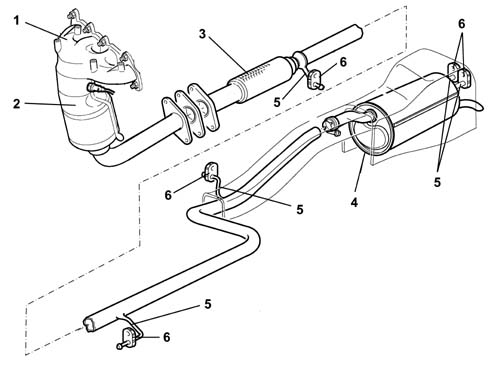
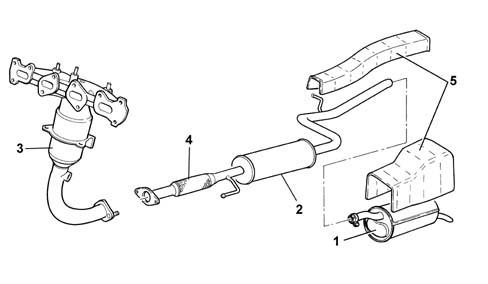
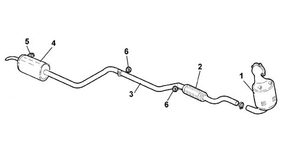
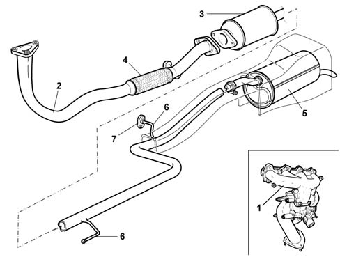
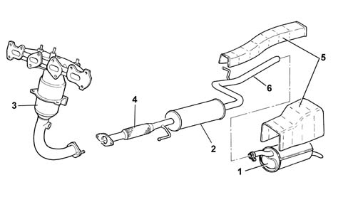

Introduction - EXHAUST PIPES AND SILENCERS
- Path
- Descriptions > 10 ENGINE > 1076 EXHAUST PIPES AND SILENCERS > Introduction - EXHAUST PIPES AND SILENCERS
- Kind
- system description
- Applies to
- engines: 1.2 8v, 1.6 16v, 1.3 JTD 16V, 1.9 JTD 8V; all production periods; only with equipment: BIPOWER
- Interactive page
- https://sloeber94.github.io/elrnDB-fDbl/en/#/2585389
Applies to: engines: 1.2 8v; all production periods
The engine exhaust gases flow through manifold (1) to the three-way catalytic converter (2) (see 1080).
At the front of the exhaust pipe, there is a flexible component (3) for limiting the transmission of vibrations.
The rear exhaust section comprises a single silencer (4).
Special guards limit the radiation of heat towards the bodyshell.
The various components are supported by mountings (5) and rubber rings (6) secured to the underbody.

Applies to: engines: 1.6 16v; all production periods
The engine exhaust gases flow through the manifold to the three-way catalytic converter (3) (see 1080).
At the front of the exhaust pipe, there is a flexible component (4) for limiting the transmission of vibrations.
The centre and rear sections of the exhaust pipe include two silencers.
Special guards limit the radiation of heat towards the bodyshell.
The various components are supported by mountings and rubber rings secured to the underbody.

Applies to: all engines; all production periods
1. Rear exhaust pipe with silencer
2. Centre exhaust pipe
3. Catalytic converter (see 1080)
4 Flexible element
5. Heat shields
Applies to: engines: 1.3 JTD 16V; all production periods
Structure
The engine exhaust gases flow through the manifold to the turbocharger and then to the oxidizing catalytic converter (1)
See descriptions 1080B EXHAUST EMISSION CONTROL SYSTEM
.
At the front of the exhaust pipe, there is a flexible component (2) for limiting the transmission of vibrations.
The rear section of the exhaust pipe consists of an intermediate pipe (3) and the rear silencer (4).
Special guards limit the radiation of heat towards the bodyshell.
The various components are supported by mountings (5) and rubber rings (6) secured to the underbody.

Applies to: engines: 1.9 JTD 8V; all production periods
The engine exhaust gases flow through the manifold (1) to the turbocharger and then via a pipe (2) to the oxidizing catalytic converter (3) (see 1080).
At the front of the exhaust pipe, there is a flexible component (4) for limiting the transmission of vibrations.
The rear exhaust section comprises a single silencer (5).
Special guards limit the radiation of heat towards the bodyshell.
The various components are supported by mountings (6) and rubber rings (7) secured to the underbody.

Applies to: engines: 1.6 16v; all production periods; only with equipment: BIPOWER
The engine exhaust gases flow through the manifold to the three-way catalytic converter (3) (see 1080).
At the front of the exhaust pipe, there is a flexible component (4) for limiting the transmission of vibrations.
The centre and rear sections of the exhaust pipe include two silencers (1) and (2).
The length of the rigid section (6) of the central exhaust pipe varies between the Doblò and Doblò Cargo versions: on the latter version, the section is longer to allow the methane cylinders to be placed under the floor, and the petrol tank is located behind the rear axle. This problem does not arise for the Doblò version, as the methane cylinders are placed in the load compartment and the petrol tank is located in front of the rear axle.
Special guards (5) limit the radiation of heat from the exhaust pipe to the bodyshell.
The various components are supported by mountings and rubber rings secured to the underbody.

1. Rear exhaust pipe with silencer
2. Centre exhaust pipe
3. Catalytic converter (see 1080)
4. Flexible element
5. Heat shields
6. Central pipe rigid pipe